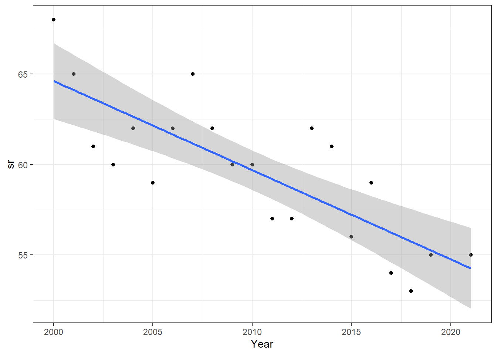
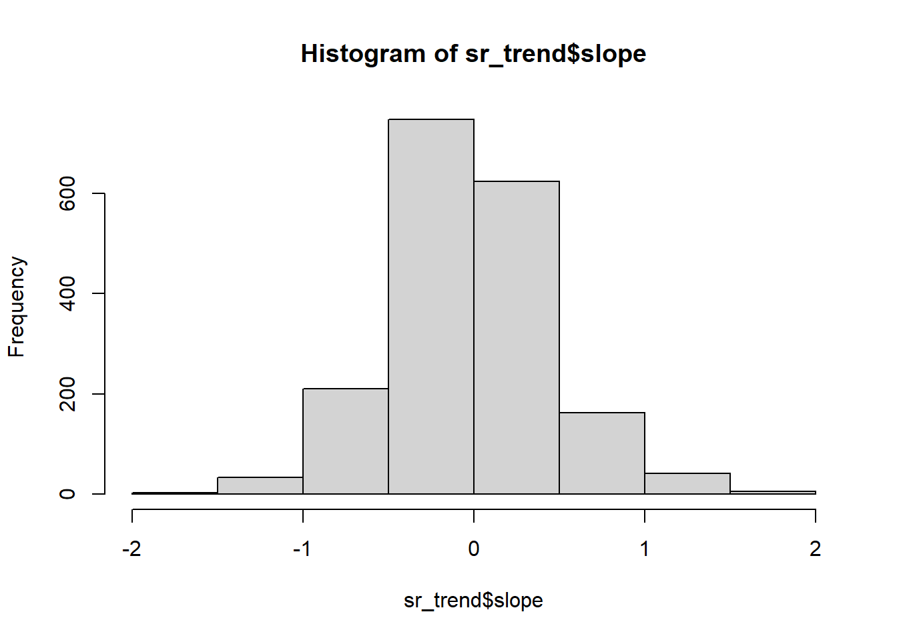
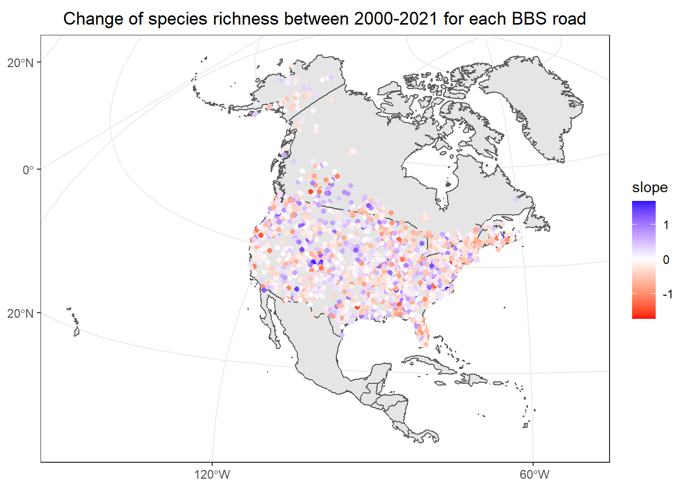
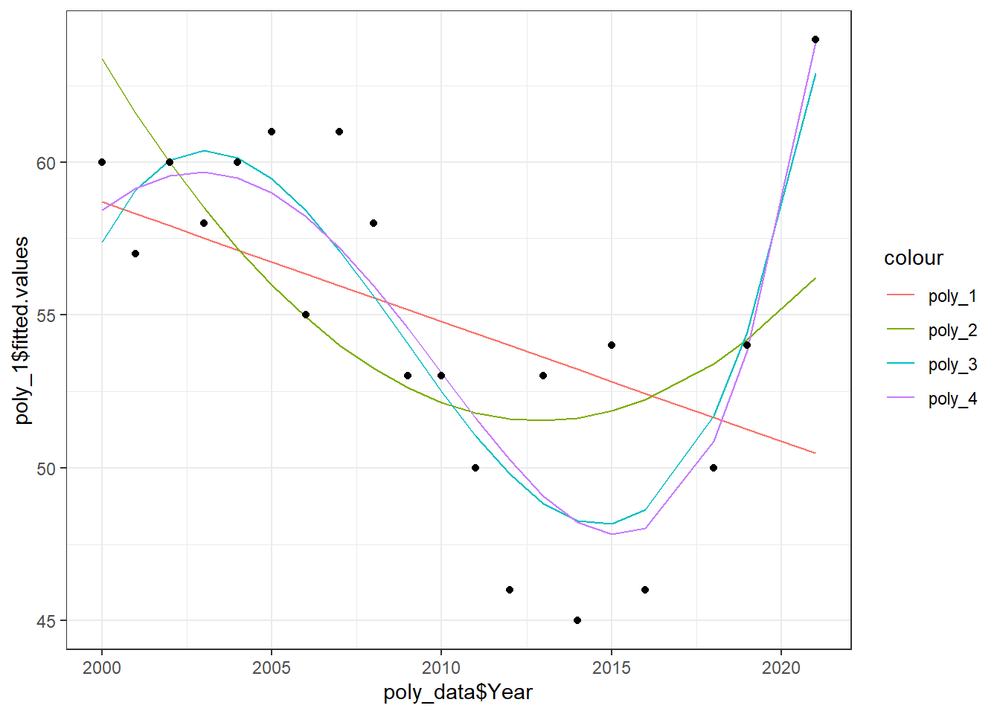

rm(list = ls())
## A bit of data management. This is the same as we did last week.
library(readr)
library(tidyr)
library(dplyr)
## Get the file names
file_list <- list.files("data/50-StopData/1997ToPresent_SurveyWide/",
full.names = T)
## Create the dataframe that will contain the data
species <- data.frame()
## Loop over each file
for(i in 1:length(file_list)){
## Load the file and temporary store it
d <- read_csv(file_list[i])
## Bind to the species dataframe
species <- rbind(species, d)
## Remove the temporary data
rm(d)
}
## Also, we will keep only the roads which have data in both 2000 and 2021
species <-
species %>%
group_by(CountryNum, StateNum, Route) %>%
filter(any(Year == 2000)) %>%
filter(any(Year == 2021)) %>%
filter(Year %in% c(2000:2021)) %>%
ungroup()Practical Class 6: Biodiversity changes
Content of the workshop of today
We will continue to work with the North American BBS that we worked with already. Last week, we assessed several metrics of biodiversity for the year 2019. However, we can wonder: how has bird biodiversity changed through time (e.g. from 1980 to 2021)?
To answer this question, we need time-series i.e., data which have been harvested for several years at the same location. This is the case of the BBS: each road has been visited once a year for a very long time. Today, we will work with data from 1990 to 2021 and assess how had biodiversity changed through this period for the different BBS roads.
Also, when working with time-series, one thing to consider is how the repeated samples have been made through the years. Were they sampled for the same amount of time? By the same number of volunteers…? This is what is often called in ecology the sampling effort or the study design. Fortunately, the BBS data collection is standardized, which means that the volunteers have to follow a protocol when counting the birds. Thus, we can compare the data through time without having to account for the sampling effort.
Assessing temporal change of diversity
There are two ways to assess changes of biodiversity:
We can simply measure biodiversity (for instance with species richness) and then see how this metric has changed through time. This is called a temporal trend.
We can use metrics which are representing temporal dynamic of biodiversity. Here, we will study the three metrics responsible of the change of species richness: colonization, extinction and persistence.
Temporal changes of species richness
Using simple linear regression
We will first see how species richness has changed through time for the different BBS roads.
## Unlike last week, today we will work on the entire dataset, and not only year 2019.
## Let's compute species richness for each road and each year using the RouteDataID column.
species_richness <-
species %>%
group_by(RouteDataID) %>%
summarize(sr = length(unique(AOU)), ## Compute species richness
CountryNum = unique(CountryNum), ## Keep the route info
StateNum = unique(StateNum), ## Keep the route info
Route = unique(Route), ## Keep the route info
Year = unique(Year)) ## Keep the year
head(species_richness)# A tibble: 6 x 6
RouteDataID sr CountryNum StateNum Route Year
<dbl> <int> <dbl> <chr> <chr> <dbl>
1 6165782 50 840 34 036 2003
2 6165783 57 840 34 038 2003
3 6165784 66 840 34 039 2003
4 6165785 69 840 34 040 2003
5 6165786 48 840 34 044 2003
6 6165787 38 840 34 042 2003Let’s represent the values of species richness through time for a single route. It is important to note that the unique identifier of a road is composed by the combination of the three columns: CountryNum + StateNum + Route.
library(ggplot2)
## Let's pick up randomly one road ####
species_richness %>%
filter(CountryNum == 840,
StateNum == "35",
Route == "005") %>%
#### and plot the value of species richness against time
ggplot(aes(x = Year, y = sr))+
geom_point()+
geom_smooth(method = "lm")+
theme_bw()
Well, it seems like there is a linear relationship between species richness and time isn’t it? If you remember the class of last week, you know that we can fit a simple linear regression to explain how species richness is “driven” by the time (in other words how it behaves through time):
\[SR = \beta_1t + \beta_0\]
Try to explain how \(\beta_1\) and \(\beta_0\) link the species richness with time
Hereafter, we will fit simple linear regressions of species richness as a function of time for each road of the BBS.
## Now let's fit a linear regression between species richness and time for each road. We could use a for loop but R as a cool function: do()
sr_trend <-
species_richness %>%
group_by(CountryNum, StateNum, Route) %>% ## those 3 columns represent the route id
do({
mod <- lm(sr ~ Year, data = .) #### fit the linear model
data.frame(slope = coef(mod)[2], #### extract the slope
intercept = coef(mod)[1], #### extract the intercept
pval = (summary(mod)$coefficients[2,"Pr(>|t|)"])) #### extract the p-value
})
# We can display the distribution of the slope values using
hist(sr_trend$slope)
What can we say about the trends of species richness from 2000 to 2021 for the BBS roads?
Using the script of last week, display on a map the BBS roads with the color indicating the temporal trend of species richness (exemple below) Hint: in order to set the color gradient from red to blue passing by white, you should use the function scale_color_gradient2(). Use ?scale_color_gradient2() to know more.

Using polynomial regression
Polynomial regression is a specific case of a linear regression. Even though the final function is not linear, the coefficients of each order of \(x\) are linear:
\[y = \beta_1x_1 + \beta_2x_1^2 + \beta_3x_1^3 \ldots \beta _nx_1^n + \beta_0\]
Let’s use a time series of another random road:
species_richness %>%
filter(CountryNum == 840,
StateNum == "25",
Route == "025") %>%
#### and plot the value of species richness against time
ggplot(aes(x = Year, y = sr))+
geom_point()+
# geom_smooth(method = "lm")+
theme_bw()As you can see, this time the relationship does not really seem linear. So let’s fit polynomial regressions (i.e. quadratic, cubic…) and see how the regressions look like.
poly_data <-
species_richness %>%
filter(CountryNum == 840,
StateNum == "25",
Route == "025")
poly_1 <- lm(sr ~ poly(Year, 1), data = poly_data)
poly_2 <- lm(sr ~ poly(Year, 2), data = poly_data)
poly_3 <- lm(sr ~ poly(Year, 3), data = poly_data)
poly_4 <- lm(sr ~ poly(Year, 4), data = poly_data)
ggplot()+
geom_line(aes(x = poly_data$Year, y = poly_1$fitted.values, color = "poly_1"))+
geom_line(aes(x = poly_data$Year, y = poly_2$fitted.values, color = "poly_2"))+
geom_line(aes(x = poly_data$Year, y = poly_3$fitted.values, color = "poly_3"))+
geom_line(aes(x = poly_data$Year, y = poly_4$fitted.values, color = "poly_4"))+
geom_point(aes(x = Year, y = sr), data = poly_data)+
theme_bw()
You can see that the higher the order of the polynomial, the higher the flexibility of the model.
[1] "R² poly1 = 0.152154474989737"[1] "R² poly2 = 0.350569287307634"[1] "R² poly3 = 0.707473782067586"[1] "R² poly4 = 0.702284540611484"